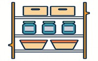
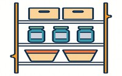

Kickstart Your Food Storage
It's neither too early nor too late to start

Overview
Smith Food Storage is a simple website split into 3 parts. The purpose is to help you keep track of the food that you buy with a special focus on food storage and being prepared. The home page is an overview that gives helpful suggestions about how to start as well as what should be included in your food storage supply. The second page will be: Add Food, which is a place where you can enter in the food you buy, along with other details. The third page: My Storage will be a place where you can see a list of the food that you have added, and the list can easily be updated and adjusted.
Inspiration
A couple weeks ago, I got a notification on my phone that a water main had broken and in an attempt to repair it the water was contaminated. As a college student I realized that I was completely unprepared for this. Thankfully the problem was resolved quickly, but in that moment I realized that food storage is not about waiting until you have enough money because they can occur when we least expect it. The key to food storage is incorporating it into your weekly shopping in simple ways. This website is designed to help you work smarter and not harder, so that when something comes your way, as rare as we hope that is, you are ready.
Our Comitment
A key focus is for navigation on our website to make sense. Everyone needs to have food storage therefore we need our website to have a small learning curve, so that from young to old and everywhere in-between it can be understood and used effectively.
Our Recomendation
To begin, it is crucial that you come up with a disaster response plan, and are aware of the disasters that are most likely to impact you. You do not need to go out and break the bank to feel secure, but we recommend that you start off by making a 3-day pack for you and anyone else in your family with essentials that will not go bad for a long time. Every family is different so their food storage will reflect that. But at the top of the list of things to get should include water bottles and items with a long shelf life, in a place when they can be accessed.